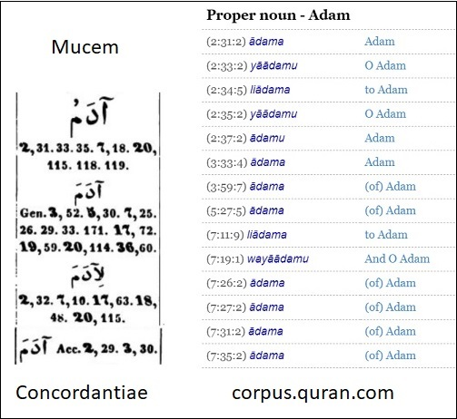
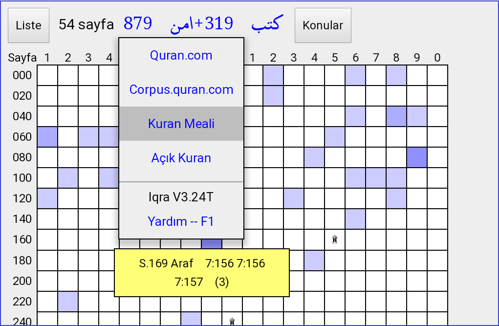
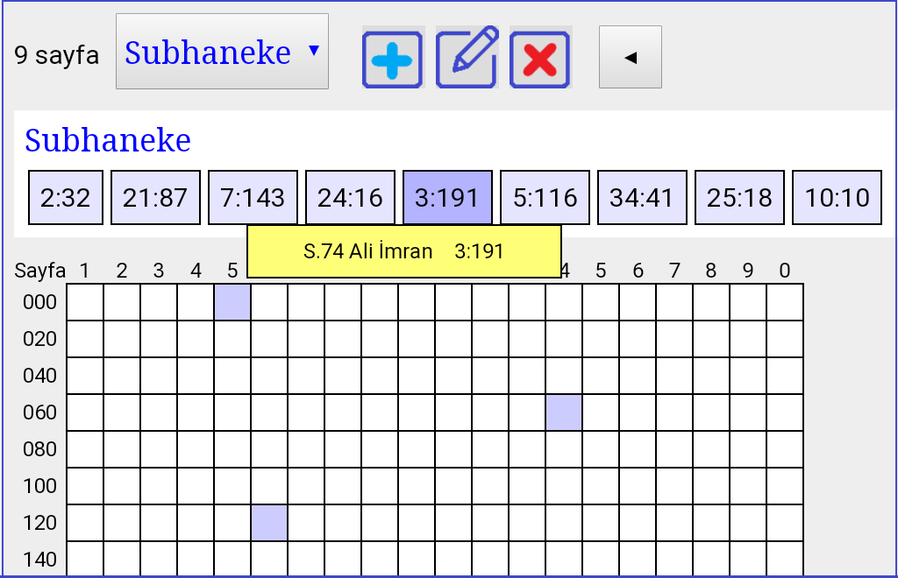

Güncel sürüm burada, aynı yere Mushaf sayfasından da ulaşılır.
Mu’cem, bir eserde geçen bütün kelimelerin indekslendiği kitapların genel adıdır. (Latincesi Concordance) Mesela Adem kelimesi Kuran’da 25 kere geçer. 1850’lerde G Flügel’in hazırladığı Concordantiae kitabında Adem böyle görünüyor.
Elle yapıldığında yıllarca süren indeksleme işlemi, bilgisayar yazılımı ile bir saniyenin içine sığdı. Yazılım, Adem kelimesinin geçtiği yerleri canlı linklerle donatır, bu linklere tıklayınca doğrudan ayete ulaşılır.

Mucem kavramına görsel bir boyut kazandıran projemiz şu vizyonla başlamıştı:
Our aim in this project is to present the word list in a visual context. At the start of the project, several sample words were prepared manually. The challenge is to make similar pages automatically for each of the 4700 distinct words in Quran... June 4, 2018 -- Istanbul
Seçilen Arapça kelimelerin köküne bağlı bu arama yöntemi Kuran dilini bilenler ya da öğrenmek isteyenler için tasarlandı. Bu sayfada görülen 604 kutunun herbiri Kuran’dan bir sayfa. Aranan kök beyaz kutuların sayfalarında hiç yok. Her kutunun rengi, ilgili sayfada bulunan kelime sayısı ile orantılı: Renk koyulaştıkça sayı arttar. Bu kutuların (beyaz ya da renkli) herbiri canlı linklerle ilgili Kuran sayfasına ulaştırır.
Resimde gösterilen ktb (kef-tâ-bâ) kökünün muhtelif türevleri 319 kere, 205 sayfada geçiyor, 47. sayfada 9 kere bulunduğu için bu kutunun rengi oldukça koyu. Arama sonucu ayetleri Iqra’da okumak için mavi alana tıklamak yeterli. Sağ alt köşedeki Corpus linkinden, kullandığımız referans sayfaya bakılabilir.
Dar ekrandan bakıldığında, 604 kutulu tablo okunaklı olarak ekrana sığmıyor, bu nedenle telefonu yan tutmak daha iyi görüntü verir.
Arama sonucu ayetleri dış kaynaklarda okumak için bağlam menüsü gerekir. (Bağlam menüsü için: mouse varsa sağ-tıklayın, yoksa ilgili kutuya uzunca basın)

Resimde iki kök (Amn ve ktb) birlikte seçilmiş. 879 kere geçen âmene ile 319 kere geçen ketebe türevlerini birlikte içeren ayetler 54 sayfada bulunmuş ve 169. sayfada bağlam menüsü açılmış. Bu arama için en kolay yol Mushaf sayfasında seçmek, ya da kökleri adres çubuğuna yazmak: mujam.html#r=ktb&r=Amn

Bu resimde, belirli bir kelimeye bağlı olmadan seçilen ayetler bir arada görünüyor:
Subhaneke
Bu noktada yeni bir konu açmak, seçili konuyu değiştirmek ya da tamaman silmek mümkün.